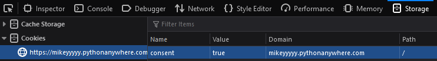

Here we will step you through how to bypass the consent requirement to access all our web pages. Inspect Element is a
very powerful tool as it allows you to view the client-side frontend code as well as cookies and so much more. Let's
open up incognito or grab a new device where you haven't already consented to get started!
We'll start by opening Inspect Element by either right clicking and opening "Inspect" or using "Ctrl+Shift+I". You should
be greated with the HTML code for the home web page! Let's expand the script tags that you see to peer into the JavaScript
code.
After looking at it, it seems we have functions for creating and reading cookies with a bunch of others to access different
pages! All of which interestingly check if a cookie with the name "consent" and value "true" exist before accessing them.
Now that we know the website checks if you consented via cookies, let's create our own! Navigating to the "Storage" section and clicking on "Cookies" we should see an empty section that says "No data present for selected host". This is because the website hasn't created any cookies for us yet. Let's do that on our own! Click the plus icon at the top right which will create a new cookie. Change its name to "consent" and value to "true" and refresh the web page.

And just like that we're in! But that was almost too easy, how do other websites protect themselves from attacks like these?
Most cookies that we deem important are not stored on the client-side HTML but in the backend server which isn't accessible
via Inspect Element. On top of this cookies don't have easily guessable names like "consent=true" but rather a large hashed
string that is near impossible to guess or brute force!